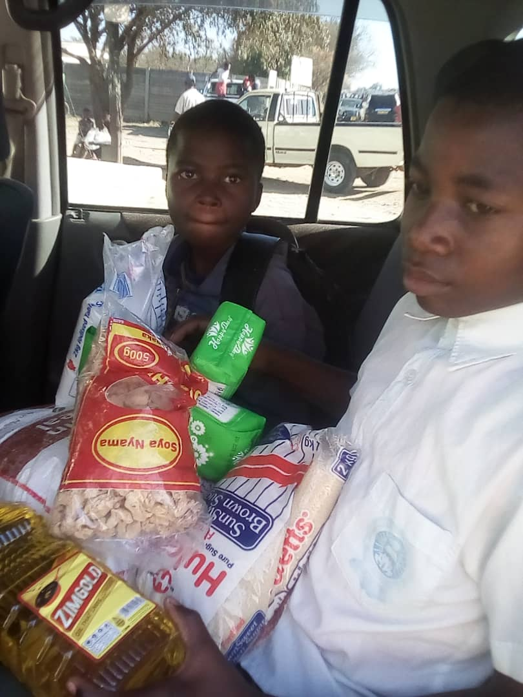
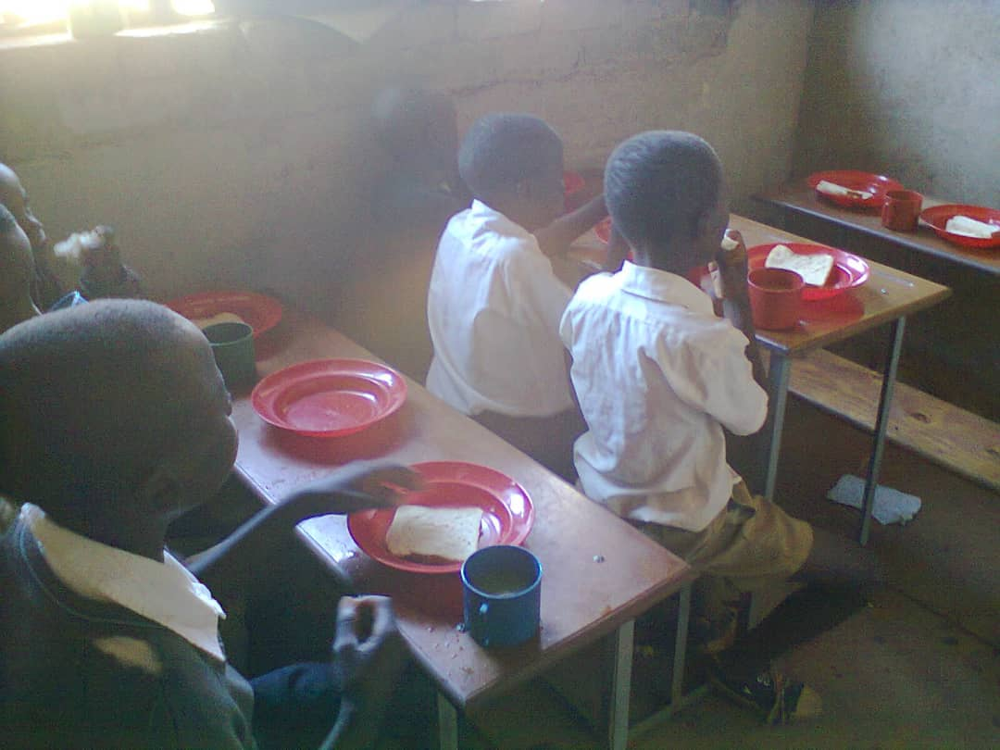
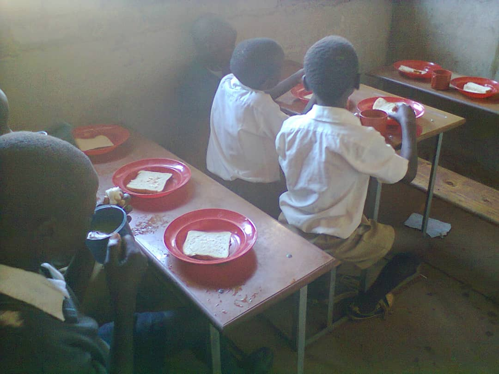
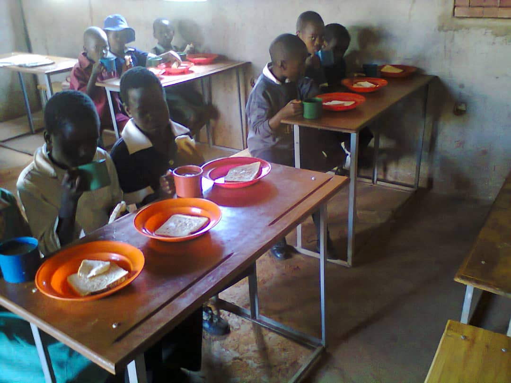
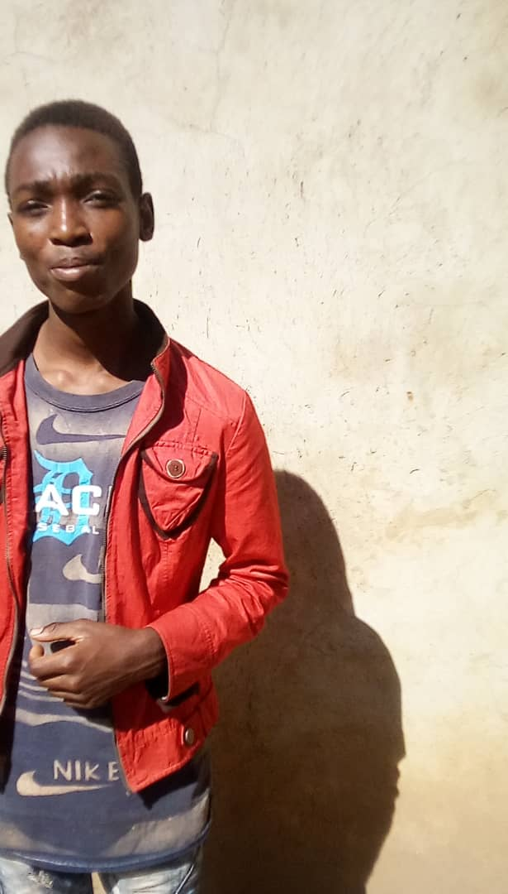
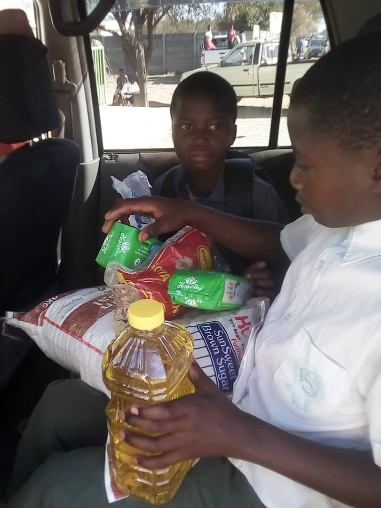
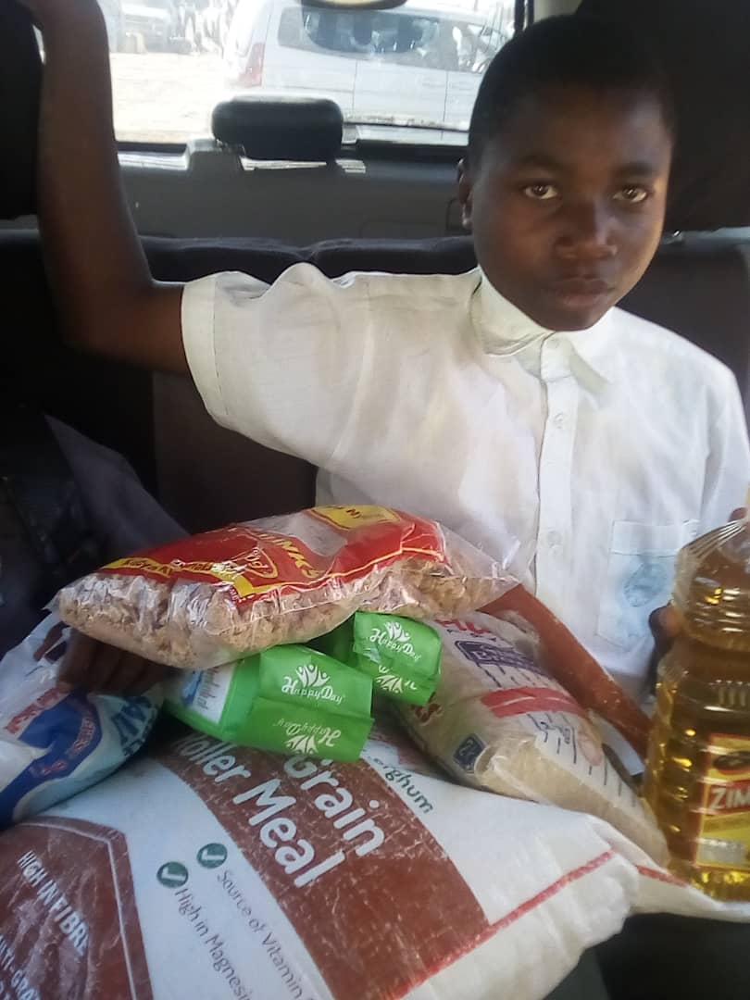
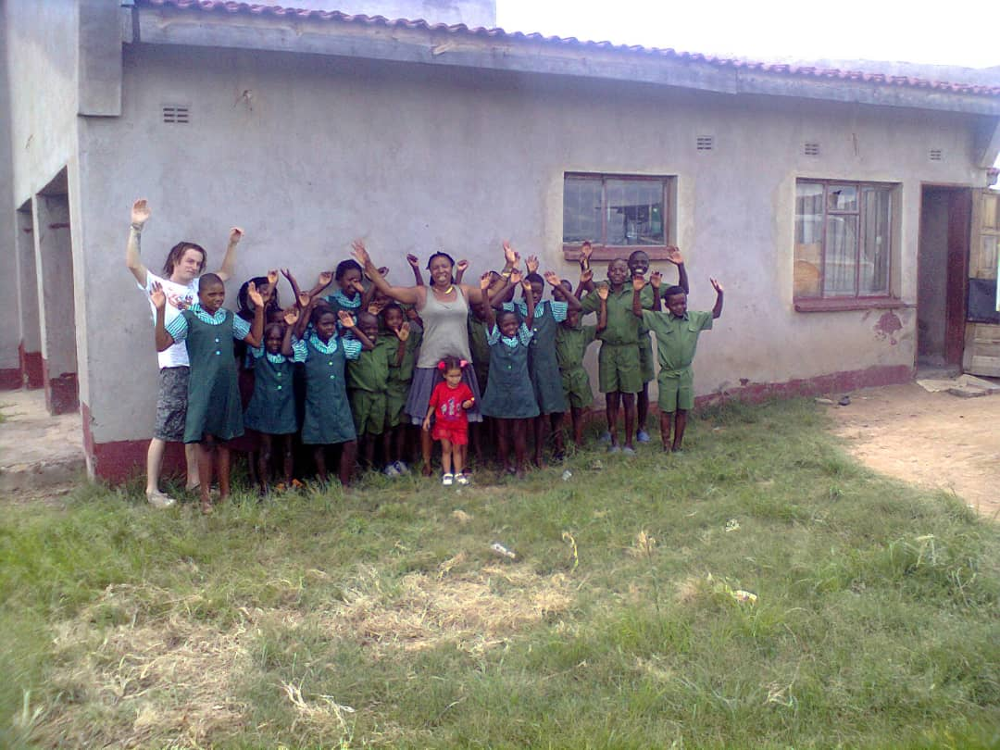
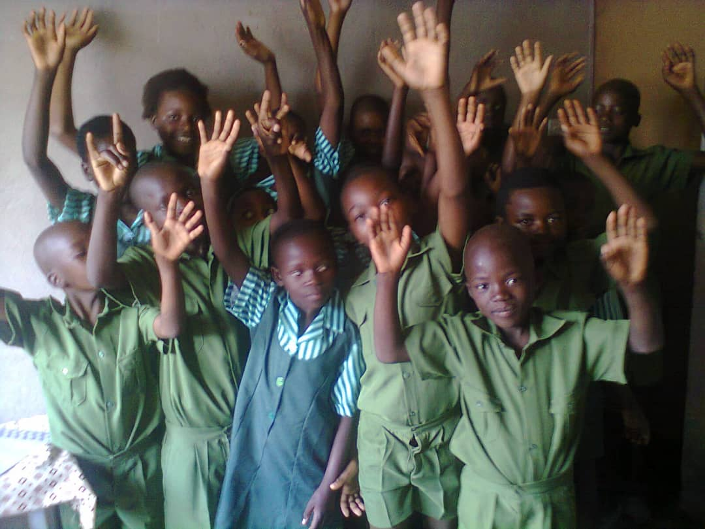
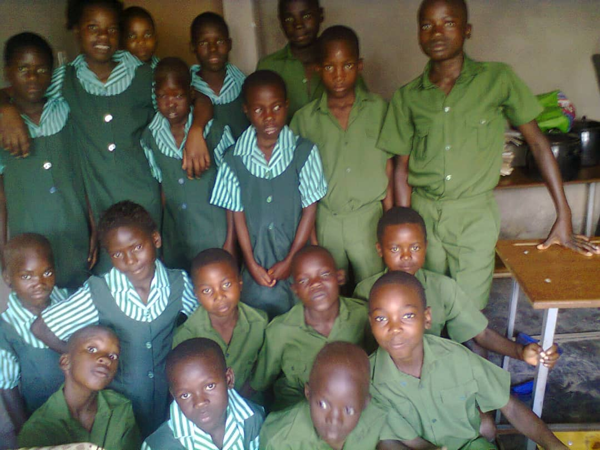

Founded by Patricia Vutete and Constantino Chapeta with the support of Catherine Robinson and her late husband John under the guidance of Fr Nigel Johnson. Ray of Light Children's Centre has transformed lives through education, food, clothing and hope.
Helping children access quality education.
Providing nutritious meals daily.
Supporting children with proper clothing.
Building brighter futures through care and love.

Ray of Light Children’s Centre is a registered Private Voluntary Organization founded in 2011 to provide holistic care and support to orphans and vulnerable children.
The organization has helped children gain access to education, nutritious food, clothing and emotional support. Some beneficiaries have gone on to tertiary education.
The centre now focuses on supporting child-headed families affected by poverty, migration, HIV/AIDS and the impact of COVID-19.
NMB Bank
Account Name: Ray of Light
Account Number: 09503764802001









Well-wishers and sponsors are welcome to donate and support the future of vulnerable children.
Insert PayPal Donation Link Here